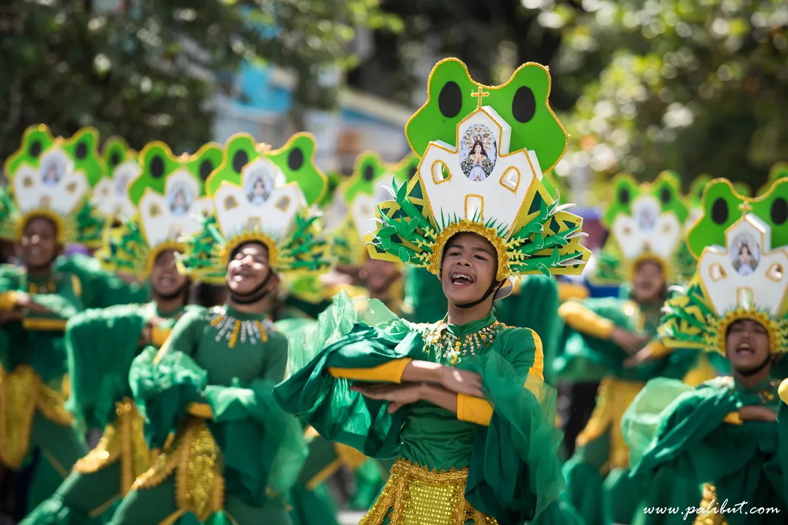
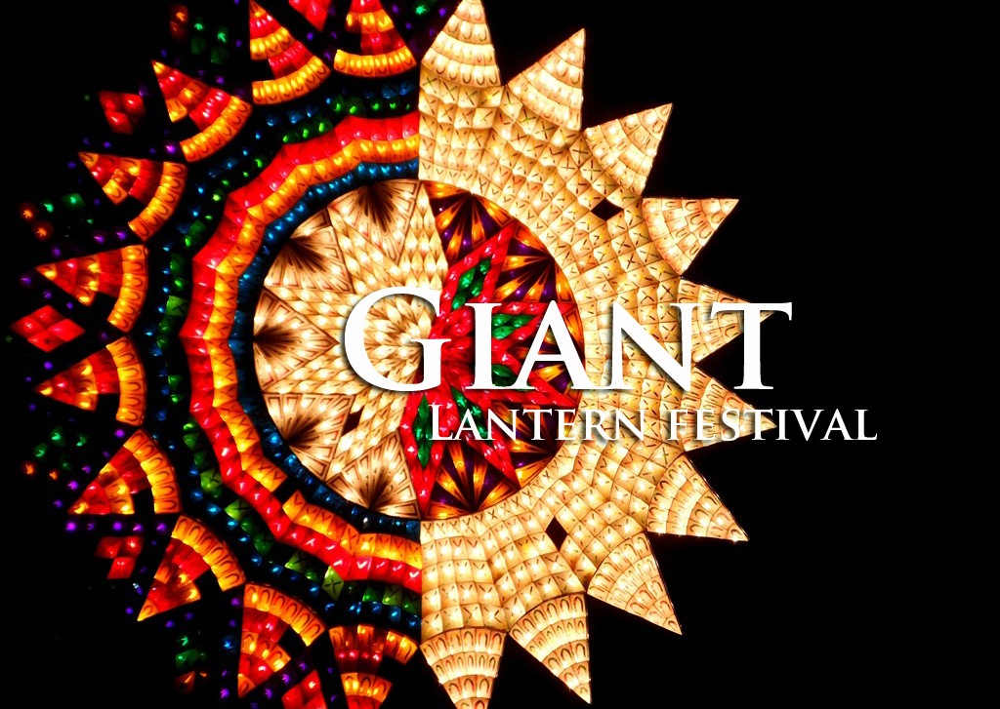
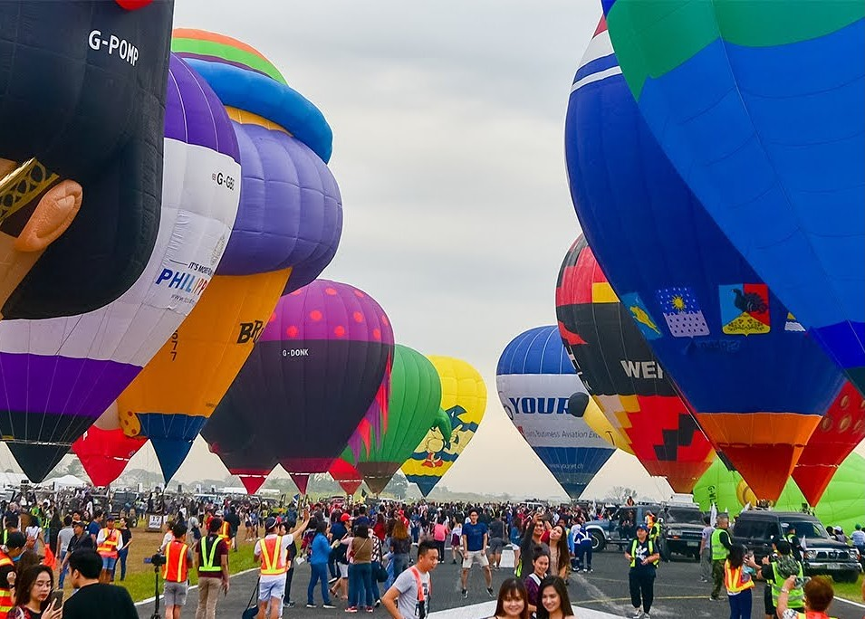
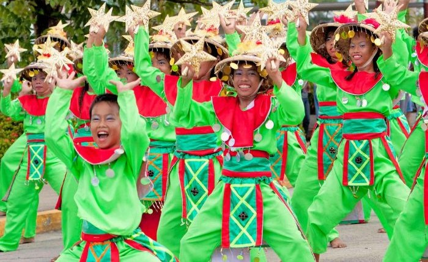
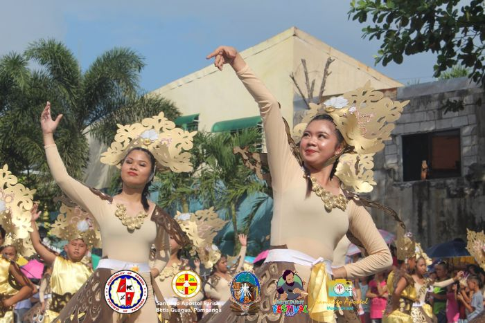

Embrace the Festive Spirit: Unforgettable Experiences at Pampanga's Vibrant Festivals
Welcome to Pampanga, a region of the Philippines famous for its lively celebrations of culture and tradition
that capture the very best of Filipino life.
A kaleidoscope of hues, music, and joyous celebrations will surround
you as you embrace the holiday spirit. Learn about the wonderful hospitality of the people as they invite you into their towns to take part in time-honored traditions, eat exquisite cuisine, and watch joyful street parades.
1. Sinukwan Festival
The first is one of the many festivals that San Fernando, a great city, has. It is the Sinukwan Festival, without a doubt! This celebration is being referred to as the "Essence of Kapampangan Spirit" by tourists from all over the nation and the world.
The Sinukwan Festival, which is celebrated every year with much fanfare, has a dizzying assortment of street performances, vibrant parades, and creative exhibits that highlight the best of the province's art, music, dance, and cuisine. The Sinukwan Festival
warmly welcomes guests to take part in the captivating festivities and fully immerse themselves in the rich tapestry of the province's customs and rituals!
2. Giant Lantern Festival
Another spectacular festival is the Giant Lantern Festival, which is held in San Fernando. Because of its visually pleasing gigantic parol lanterns, the gigantic Lantern Festival, also known as Ligligan Parul, is one of the most anticipated events in
Pampanga every year! The appellation "Christmas Capital of the Philippines" was given to San Fernando as a result of this festivity.
During the Giant Lantern Festival, one can really feel the Christmas spirit that the Filipino people have within of them.
The celebrations were timed to coincide with the Simbang Gabi because as Christmas Day approaches, lantern contests get larger and more colorful.
3. Philippine International Hot Air Balloon Fiesta
 The Pampanga`s Festival would not be complete without the biggest and longest-running aviation sports in the countryIt's Clark, Pampanga's Hot Air Balloon Festival. It is a four-day festival with participation from pilots from all over the world with
hundreds of hot air balloons in various colors and designs. It was created to help Pampanga's economy recover after Mount Pinatubo's catastrophic eruption. The Hot Air Balloon Festival itself is beautiful, but the celebrations also include additional
events like skydiving, freestyle aerobatics, flag leaps, kitemaking, a competition for remote-control helicopters and airplanes, and much more! Try all these breath-taking activities, and let the bravery in you out!
4. Frog Festival
 Fiestang Tugak is undoubtedly one of the most unusual and distinctive celebrations in the Philippines based just on its name. The Frog Festival is a San Fernando City tradition that got its start as a result of all the frogs that live in the city's rice fields.
The Fernandinos came up with ingenious methods throughout time to trap these frogs and prepare them as delectable delicacies.
Adobong Tugak, Tinolang Tugak, Fried Tugak, Almondegas, and even Frog Burgers are among the dishes that are popular during the celebration. Along with the cuisine, there are a ton of other events going on, including pageants, carnivals, and of course, frog-catching competitions!
5. Dukit Festival
Welcome to the lively and enchanting province of Pampanga, Philippines, where the Dukit Festival weaves a mesmerizing tapestry of art, history, and tradition.
The Dukit Festival is celebrated every year in Betis, Guagua, Pampanga, from December 27 to 28 as a part of the commemoration of St. James the Great's feast day. It is considered as the "Sistine Chapel of the Philippines".
The country's woodcarving culture is celebrated and preserved at this event. One of the festival's highlights is an exhibition of the greatest woodcarving creations from the area, including furniture and ecclesiastical
and religious objects. Additionally, there is a significant competition in which thirty woodcarvers or more compete in an on-the-spot carving competition. Visitors are welcome to purchase some of the woodcarving souvenirs as a remembrance and to help the Dukit woodcarving community.
Enjoy the beauty of Pampanga's vivid festivals and make lifelong experiences that you won't soon forget. Therefore, Pampanga's festivals are certain to provide you with a sense of surprise and excitement, whether you're dancing
in the streets during the Sinulog Festival or gazing at the bright Lantern Festival displays. As you learn about the grandeur of this culturally diverse province and the passion of its people, embrace the holiday spirit and let
Pampanga's raucous celebrations capture your heart!

Beverly Rodriguez
A seasoned and prolific author of the blogosphere, whose expertise spans a wide array of topics. With a keen intellect and a gift for eloquent expression, this author's blog is a treasure trove of thought-provoking insights, well-researched articles, and engaging narratives that captivate readers from all walks of life. Whether exploring the realms of technology, science, literature, or personal growth, their impeccable writing style and dedication to delivering high-quality content make them a trusted and respected voice in the world of blogging.
John Doe
I love the rich culture of Pampanga! I wish I could visit it soon. I am going there around Jun or JUly. Wish me luck :)
Reply
Erika Viteno
I want to really visit there. But I am so busy right now. Any tips on how to go plan my trip?
Reply
Jimwell Santos
Oh, you can read the how to go in Pampanga vlog in this website! it is really helpful.
Reply
Erika Viteno
Thank you very much for you response! I would love to do that.
Reply
Carla Sanchez
The festivals of Pampanga seem absolutely captivating! The combination of vibrant cultural displays, delectable food, and strong community spirit must create an incredible atmosphere during these celebrations. I would love to witness the colorful parades and traditional dances firsthand, and immerse myself in the rich cultural heritage of the province.
Reply
Leave a comment